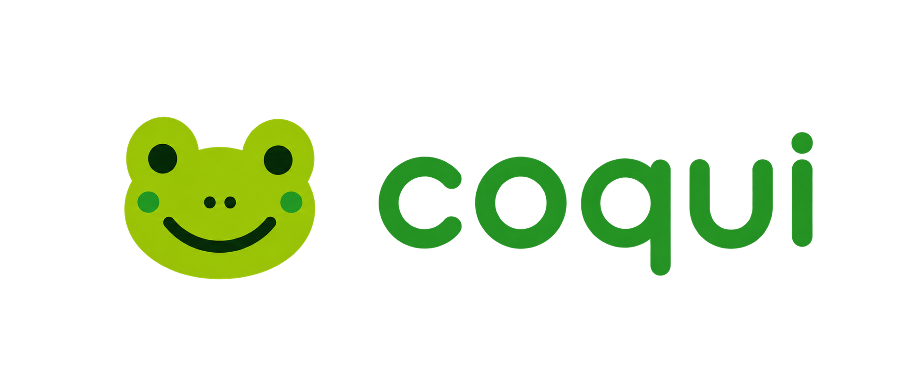
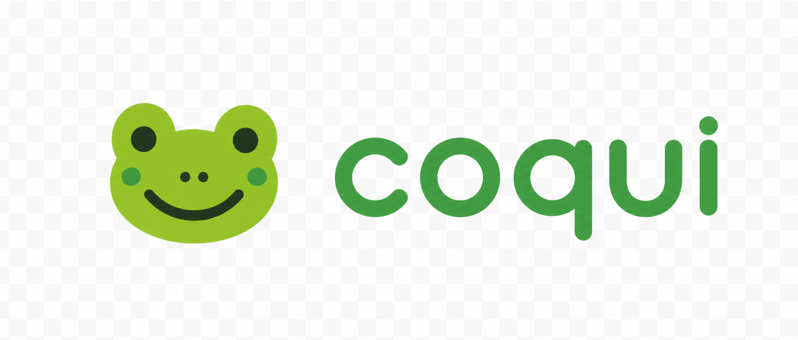

Your chosen frog and rounded wordmark.
You selected this design over the earlier screenshot logo. The cleanup below has real PNG transparency, including the spaces inside the letters. Production branding has not changed yet.
Transparent logo
Small lockup above; enlarged inspection below. The same PNG is used on both surfaces.
On the Comfy surface

The surface shows through the background and letter openings.
On the Compact surface
No square badge or checkerboard background.
Locally bundled interface typography
Inter for interface text; the brand wordmark remains source artwork. These are type specimens, not rebuilt screens.
Comfy · light
Today
Friday, May 9, 2025 · Week 15 of 16
Draft scholarship essayMake progress on your application essay.
9:00 AM 45 min 3 days
Compact · dark
This week
Work queue · 12 tasks
Finish Problem Set 4Calculus I · High priority · Today
9:00 AM 2h 2 / 4
Selected source before background removal
This is the design you chose. Its painted checkerboard has been removed in the PNG shown above.
